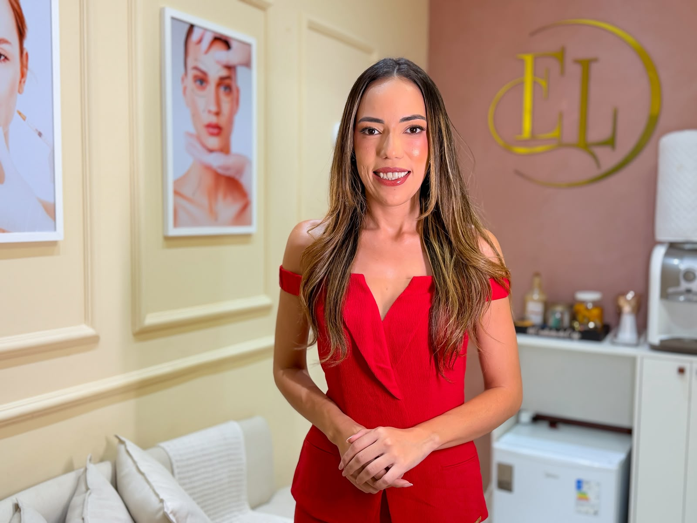

Biomédica esteta, CRBM 11140
Dra. Ericka Laysa
Cuidar de você é a nossa prioridade.
Fundadora da EL Saúde & Estética, em Queimadas, na Paraíba. Uma clínica pensada para que você se sinta acolhida do primeiro contato ao pós-procedimento.
Conheça a minha história
Minha história
A EL Saúde & Estética nasceu de um propósito especial: transformar o cuidado com você mesma em uma experiência de acolhimento, autoestima e bem-estar.
A história da logo
EL
São as iniciais do meu nome, Ericka Laysa. Levam para a marca a minha essência, a minha história e o meu compromisso com cada pessoa que confia no meu trabalho.
Saúde & Estética
Traduz aquilo em que acreditamos: cuidar da beleza vai muito além da aparência. Cada paciente é olhada de forma individual, respeitando as suas características e os seus objetivos.
Natural, harmonioso e seguro
É esse o resultado que eu busco em cada atendimento: realçar a sua beleza sem mudar quem você é.
Neste vídeo eu falo sobre aquelas marquinhas que aparecem na testa e por que o tratamento fica leve e natural quando é bem feito.
Aqui, você não é apenas mais uma paciente. Você é prioridade.
Cada atendimento é pensado para que você se sinta acolhida, segura e confiante, do primeiro contato ao pós-procedimento.
Nossa missão
Realçar aquilo que você já tem de mais bonito.
Com tratamentos personalizados, tecnologia, conhecimento e, principalmente, cuidado.
Neste vídeo eu explico o que faz o rosto parecer cansado e caído com o tempo, e como é possível devolver o contorno com leveza.
Vamos conversar sobre você?
A sua avaliação é o primeiro passo. Escolha um horário e conte o que você quer cuidar.